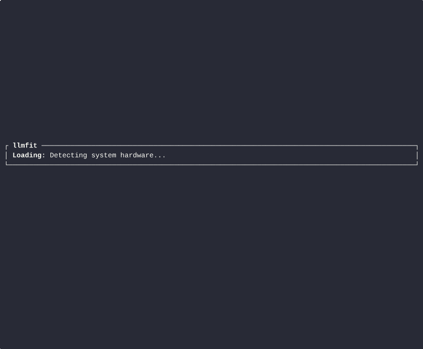

Rank what really fits
Score models by quality, speed, fit, context, and runtime compatibility for the hardware you actually own.
Local AI, minus the hardware guesswork
LLMFit inspects RAM, CPU, GPU, and local runtimes, then recommends the best-fitting models, quantizations, and run paths before you waste hours downloading the wrong checkpoint.
curl -fsSL https://raw.githubusercontent.com/miounet11/llmfit/main/install.sh | sh

Packaging direction inspired by the clarity of Ollama, the release quality of uv, and the self-hosted polish of Open WebUI.
Why it works
Score models by quality, speed, fit, context, and runtime compatibility for the hardware you actually own.
Use the TUI to compare multiple candidates side by side instead of blindly pulling 20GB checkpoints.
Reverse the decision: choose a target model and ask how much RAM, VRAM, and CPU you need to run it well.
Serve recommendations over HTTP and feed them into cluster schedulers, setup scripts, or inventory dashboards.
Who it is for
Pick a model that fits your laptop or workstation before you lock yourself into a bad runtime choice.
Standardize which models belong on which nodes and expose that answer through JSON or an internal service.
Turn “what should I run on this box?” into a repeatable, professional recommendation process.
Workflow
LLMFit detects CPU, RAM, GPU name, VRAM, backend, and local providers automatically.
Search for coding, agents, chat, RAG, or general-purpose tasks and narrow results to runnable options.
Download the right model, export JSON, or switch to planning mode to spec the hardware you actually need.
Install
curl -fsSL https://raw.githubusercontent.com/miounet11/llmfit/main/install.sh | shgit clone https://github.com/miounet11/llmfit.git
cd llmfit
cargo build --releasedocker compose up --buildRuns the recommendation API on `8787` and the site on `8080`.
API mode
llmfit serve --host 0.0.0.0 --port 8787curl http://127.0.0.1:8787/recommend?use_case=coding&limit=3llmfit recommend --json --use-case agents --limit 5Open source, ready now